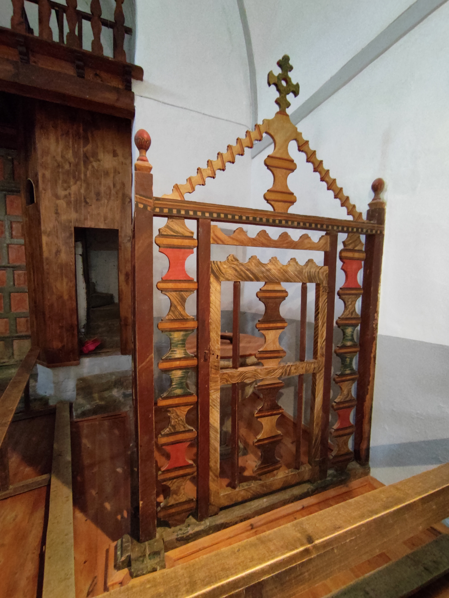
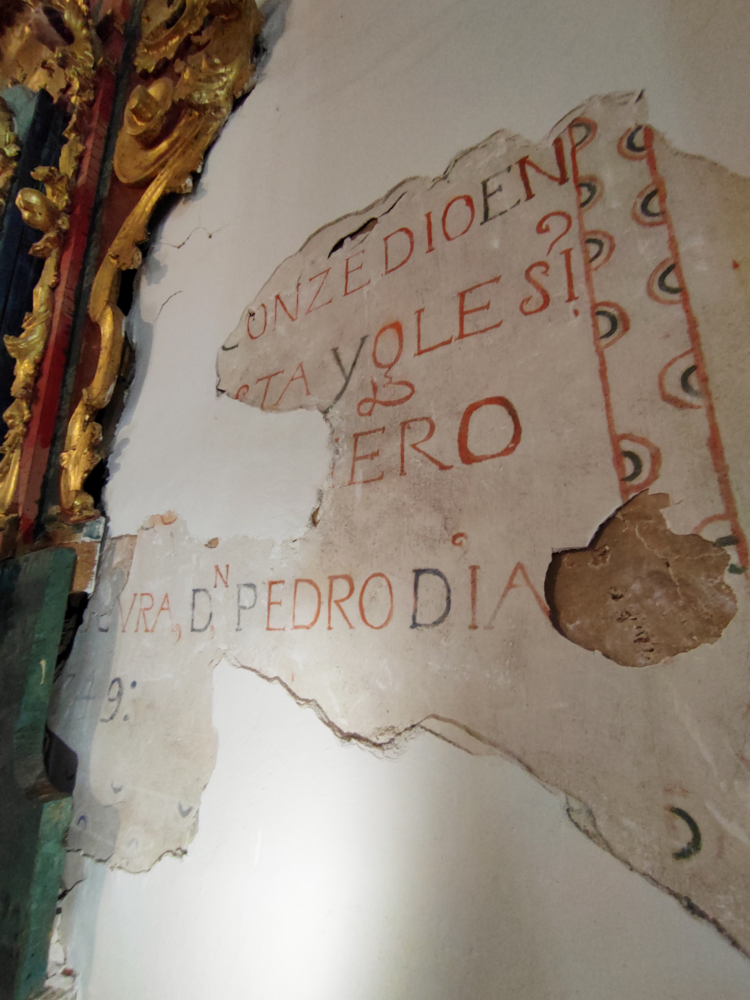

Iglesia de Santa Catalina
Un templo barroco que conserva siglos de historia, fe y vida social en el corazón de Viforcos.
Descubrir su historiaUn templo con siglos de historia
La Iglesia de Santa Catalina es de estilo barroco, con una nave de 22,20 metros, muros de mampostería y pilares de piedra, todo recubierto de yeso en el interior. Fue construida en el siglo XVI, aunque ha sufrido varias ampliaciones y modificaciones a lo largo del tiempo.
Sus arcos son de piedra, salvo el pórtico, que presenta incrustaciones en mampostería de estilo neoclásico. Su espadaña de dos cuerpos alberga dos campanas con acceso exterior, reflejo del importante carácter social y comunicativo que tuvieron los campanarios en la vida del pueblo.
Estilo barroco
Construida en el siglo XVI y ampliada con el paso del tiempo.
Campanas
Fueron medio de comunicación local para avisos religiosos y sociales.
Retablos
Conserva un retablo mayor rococó y otros secundarios de gran valor.
Fiestas
Sigue siendo punto de encuentro en celebraciones y tradiciones del pueblo.
Detalles y entorno de la iglesia
Una pequeña muestra de uno de los elementos patrimoniales más importantes de Viforcos.




Un lugar que sigue reuniendo al pueblo
La Iglesia de Viforcos sigue albergando a sus vecinos y celebrando sus fiestas más destacables: Nuestra Señora de Fátima, Corpus y la fiesta grande, celebrada el segundo fin de semana de agosto en honor a Santa Bárbara y San Antolín.